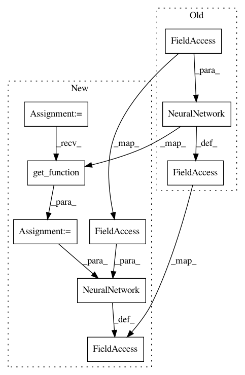

3058bfb87edb7f12bdece2e9e454048df146490a,tensorforce/models/naf_model.py,NAFModel,create_tf_operations,#NAFModel#Any#,46
Before Change
training_output_vars = tf.contrib.framework.get_variables("training_outputs")
with tf.variable_scope("target"):
self.target_network = NeuralNetwork(config.network, inputs=self.state)
self.internal_inputs.extend(self.target_network.internal_inputs)
self.internal_outputs.extend(self.target_network.internal_outputs)
self.internal_inits.extend(self.target_network.internal_inits)
target_value = dict()
with tf.variable_scope("target_outputs"):
// State-value function
target_value_output = layers["linear"](x=self.target_network.output, size=1)
for action in self.action:
// Naf directly outputs V(s)
target_value[action] = target_value_output
target_output_vars = tf.contrib.framework.get_variables("target_outputs")
with tf.name_scope("update"):
for action in self.action:
q_target = self.reward[:-1] + (1.0 - tf.cast(self.terminal[:-1], tf.float32)) * config.discount * target_value[action][1:]
delta = q_target - q_value[:-1]
self.loss_per_instance = tf.square(delta)
// We observe issues with numerical stability in some tests, gradient clipping can help
if config.clip_gradients > 0.0:
After Change
training_output_vars = tf.contrib.framework.get_variables("training_outputs")
with tf.variable_scope("target"):
network_builder = util.get_function(fct=config.network)
self.target_network = NeuralNetwork(network_builder=network_builder, inputs=self.state)
self.internal_inputs.extend(self.target_network.internal_inputs)
self.internal_outputs.extend(self.target_network.internal_outputs)
self.internal_inits.extend(self.target_network.internal_inits)
target_value = dict()
with tf.variable_scope("target_outputs"):
// State-value function
target_value_output = layers["linear"](x=self.target_network.output, size=1)
for action in self.action:
// Naf directly outputs V(s)
target_value[action] = target_value_output
target_output_vars = tf.contrib.framework.get_variables("target_outputs")
with tf.name_scope("update"):
for action in self.action:
q_target = self.reward[:-1] + (1.0 - tf.cast(self.terminal[:-1], tf.float32)) * config.discount * target_value[action][1:]
delta = q_target - q_value[:-1]
self.loss_per_instance = tf.square(delta)
// We observe issues with numerical stability in some tests, gradient clipping can help
if config.clip_gradients > 0.0:
In pattern: SUPERPATTERN
Frequency: 3
Non-data size: 9
Instances
Project Name: reinforceio/tensorforce
Commit Name: 3058bfb87edb7f12bdece2e9e454048df146490a
Time: 2017-07-22
Author: aok25@cl.cam.ac.uk
File Name: tensorforce/models/naf_model.py
Class Name: NAFModel
Method Name: create_tf_operations
Project Name: reinforceio/tensorforce
Commit Name: 3058bfb87edb7f12bdece2e9e454048df146490a
Time: 2017-07-22
Author: aok25@cl.cam.ac.uk
File Name: tensorforce/models/dqn_model.py
Class Name: DQNModel
Method Name: create_tf_operations
Project Name: reinforceio/tensorforce
Commit Name: 3058bfb87edb7f12bdece2e9e454048df146490a
Time: 2017-07-22
Author: aok25@cl.cam.ac.uk
File Name: tensorforce/models/policy_gradient_model.py
Class Name: PolicyGradientModel
Method Name: create_tf_operations